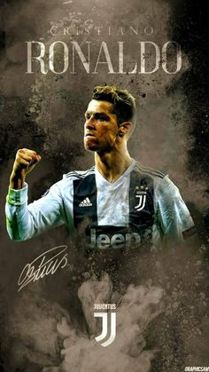

Cristiano Ronaldo dos Santos Aveiro (European Portuguese: [kɾiʃˈtjɐnu ʁoˈnaɫdu]; born 5 February 1985) is a Portuguese professional footballer who plays as a forward for Italian club Juventus and captains the Portugal national team. Often considered the best player in the world and widely regarded as one of the greatest players of all time,[4][5][6] Ronaldo has a record-tying five Ballon d'Or awards,[note 2] the most for a European player, and is the first player to win four European Golden Shoes.
This is a link to wikipedia 